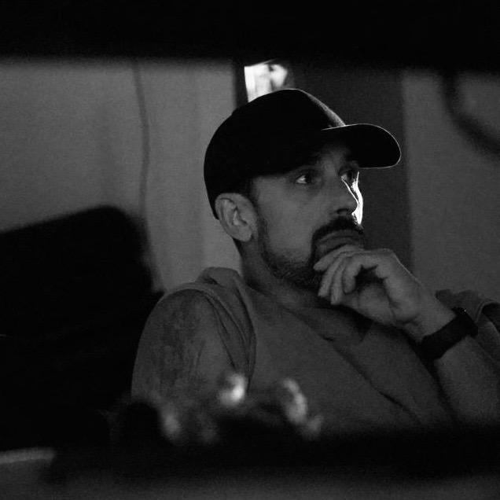
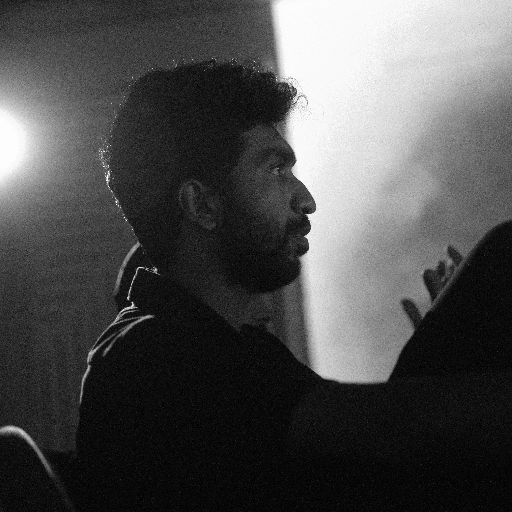
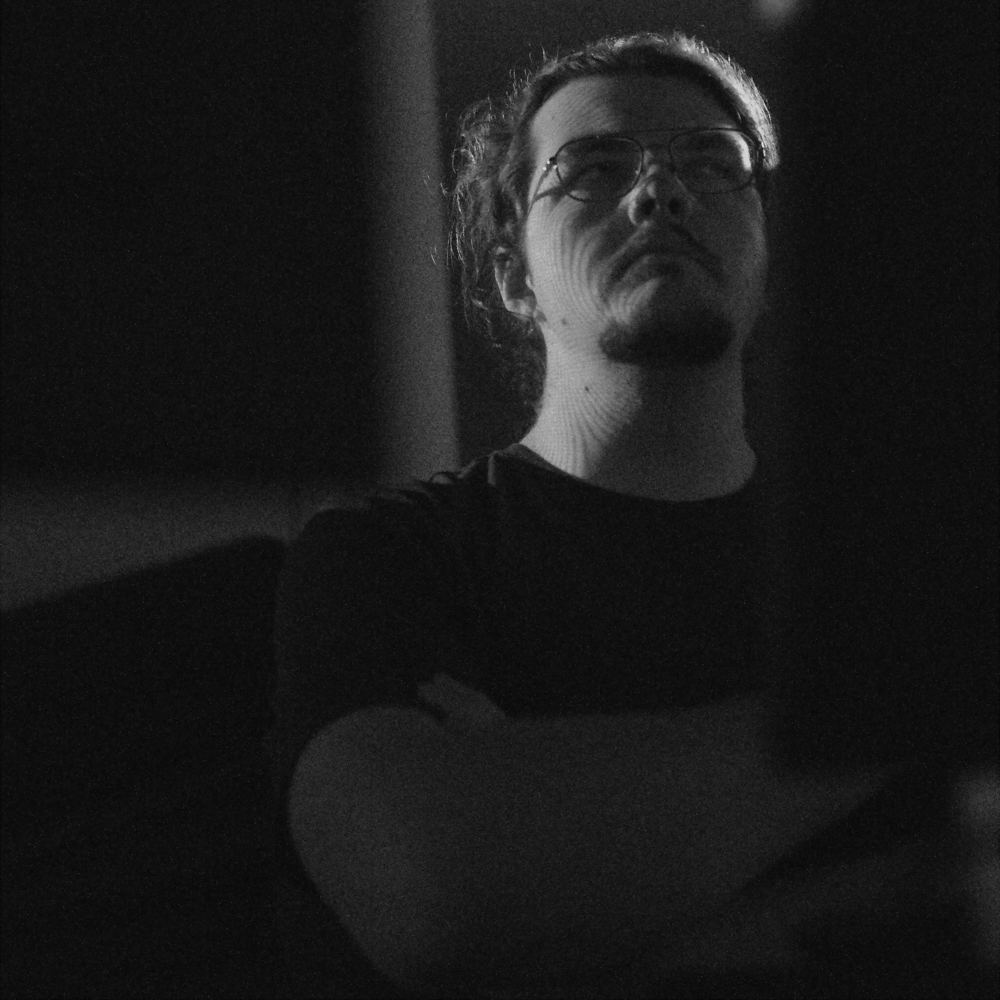
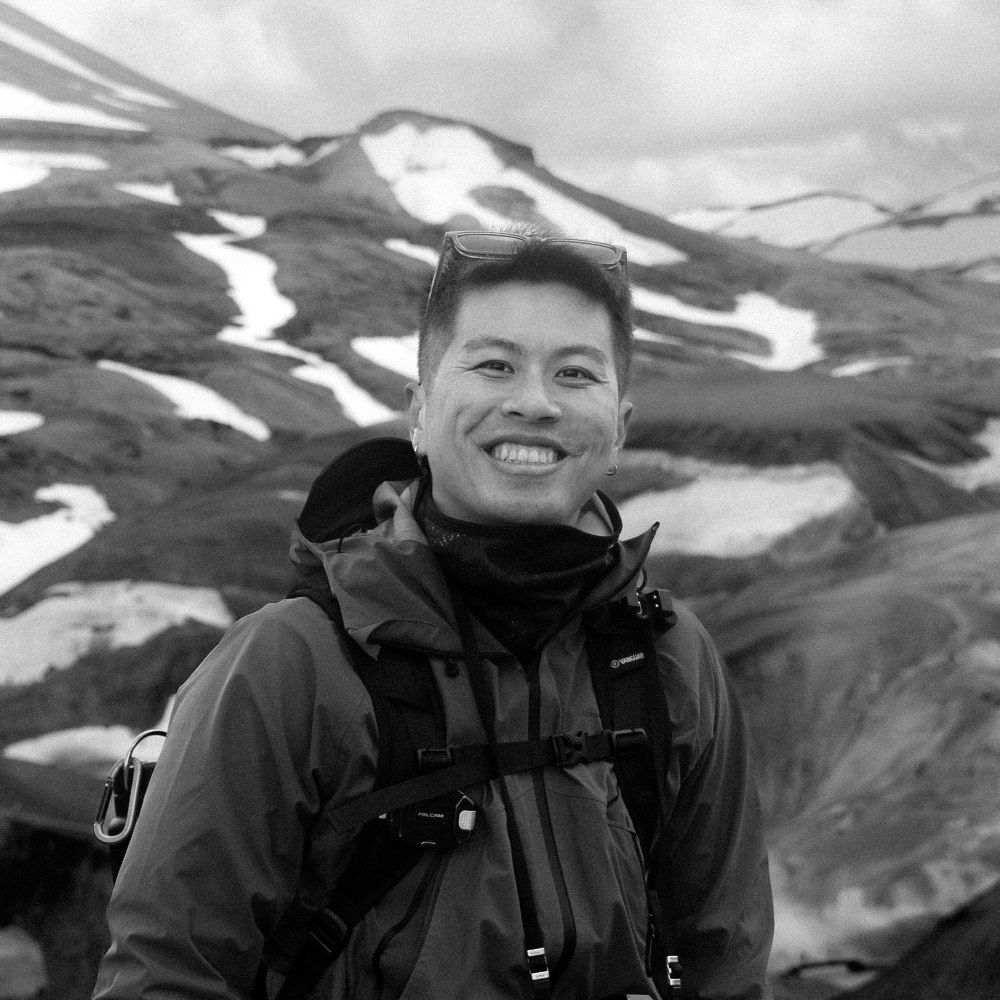
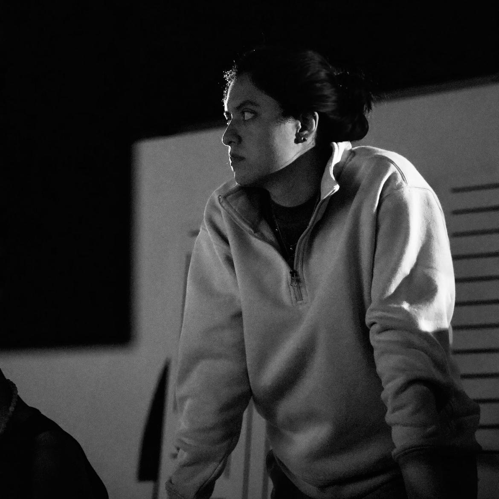
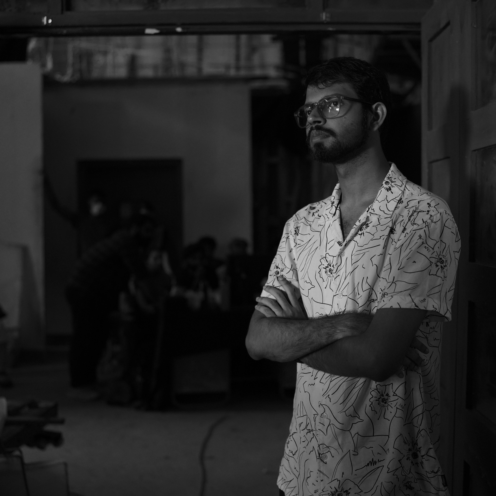
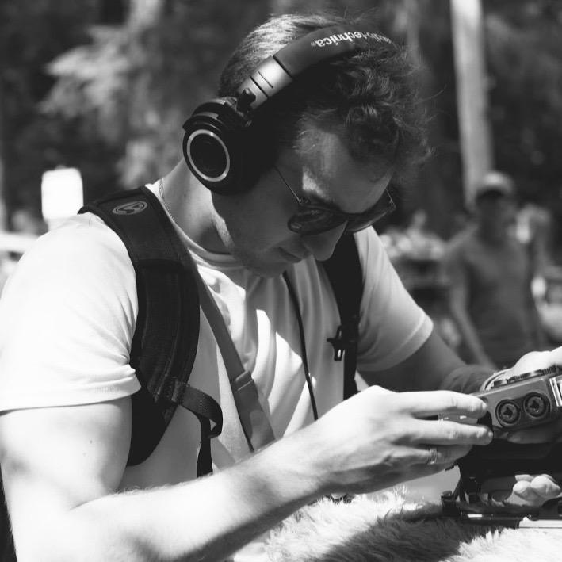
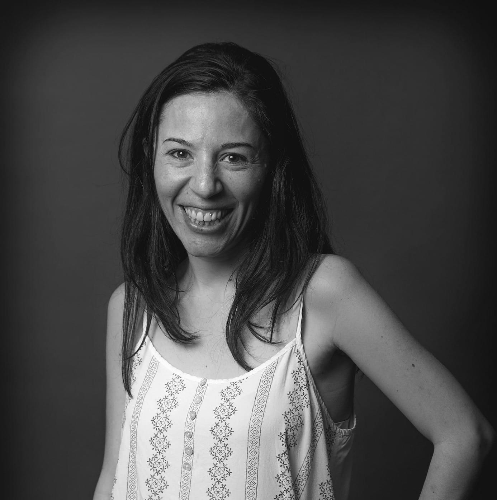
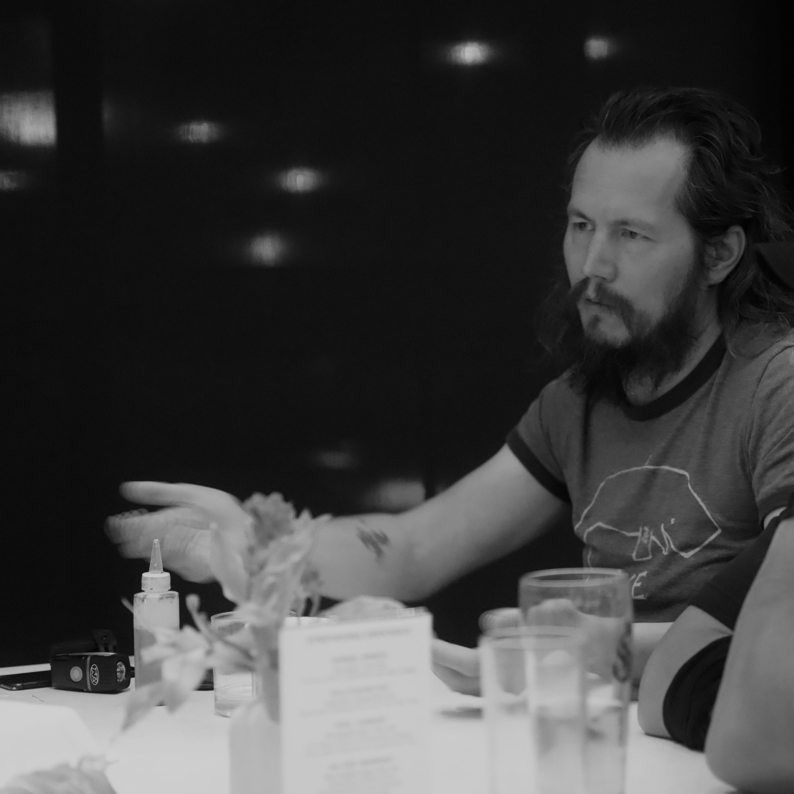
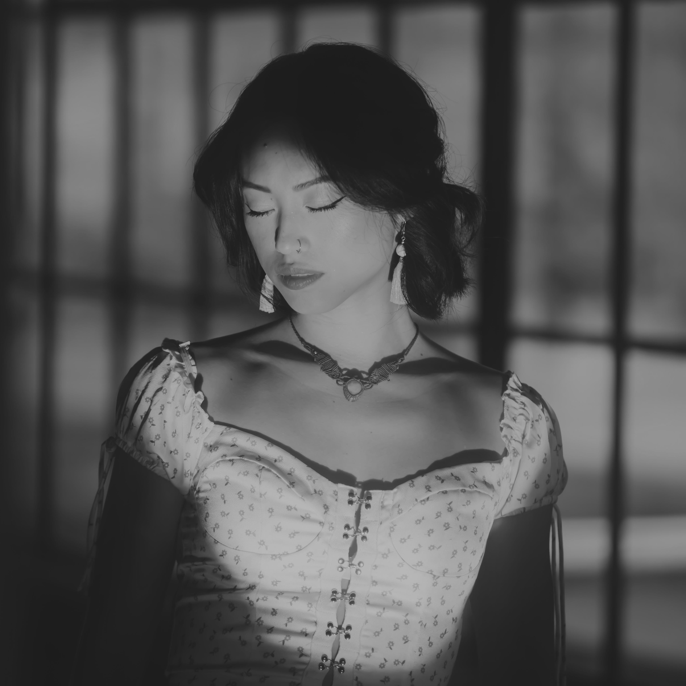

Audio Essentia is a collective of multi-disciplinary, multi-ethnic, multi-generational artists based in Vancouver. DEPTHS is their current installation exploring consciousness through immersive audio-visual experiences and pioneers methodologies for touring immersive installations globally while contributing to the emerging field of consciousness-exploring art.
Audio Essentia advances spatial audio/video technology applications internationally, establishing new standards for mobile immersive experiences and enhancing understanding of how traditional wisdom integrates with contemporary art practices.

Creative Director, Sound Editor and Re-Recording Mixer
Vancouver-based creative director, producer and re-recording mixer specializing in immersive audiovisual consciousness exploring experiences.

Co-Creative Director, Supervising Sound Editor, Re-Recording Mixer And International Talent Coordinator
Supervising Sound Editor credited on 15+ films, over 100 commercial projects, and immersive media productions.

VFX Artist and Technical Sound Designer
Vancouver-based sound designer and audio programmer focused on providing clean, adaptive soundscapes that enhance interactive narratives.

Video Editor, Sound Designer and ADR Recordist
Steven is a Vancouver-based Sound Designer and Video Editor specializing in weaving audio and visual elements into one unified and flowing narrative.

ADR Editor, Voice Processing, Sound Designer and Web Developer
Oaxaca-based multidisciplinary sound designer specialized in dialogue editing and audio implementation for videogames. Experienced across Unity, Unreal Engine, and Roblox Studio, with extensive live sound background including 7+ stage productions and music festivals.

Media Composer & Music Producer
Multi-disciplinary music composer for independent films, music and advertising based out of India, with credits spanning over 6 years and multiple award-winning productions. Sidharth brings a unique cultural perspective to the collective's sonic palette.

Sound Designer
Vancouver-based sound designer specializing in cinematic audio for film and games. He creates immersive soundscapes through field recording, sound design, and audio mixing, with a passion for crafting impactful sonic experiences that bring stories and worlds to life.

Lead Video Editor
Vancouver-based editor and filmmaker with 14+ years in post-production across documentaries, video games, animation and VFX. Has worked on major productions including Star Wars series (The Mandalorian, Ahsoka), Netflix animation, and AAA games at Electronic Arts, Capcom, and SEGA.

Media Composer and Music Producer
Vancouver-based composer and VFX artist active in music and film since 1993. Joel's parallel careers span VFX work on Life of Pi, Game of Thrones, and multiple Star Wars productions at MPC, ILM, and Image Engine, while maintaining deep roots in Vancouver's underground music scene. His sonic palette evolved from Pacific Northwest grunge to electroacoustic and ambient explorations, blending acoustic instrumentation with analog gear and electronic processing to create immersive soundscapes.

Spatial Audio Technician, Installation and Strike Crew Supervisor
Vanessa Lefan Yuen (樂凡) is a Taiwanese interdisciplinary artist and singer-songwriter based in Vancouver, where she works as a 4DSOUND technician at Lobe Studio. Blending music, performance, theatre, visual arts, and spatial audio, her work holds space to process, grieve, resist despair through hope, and co-create imagined worlds.